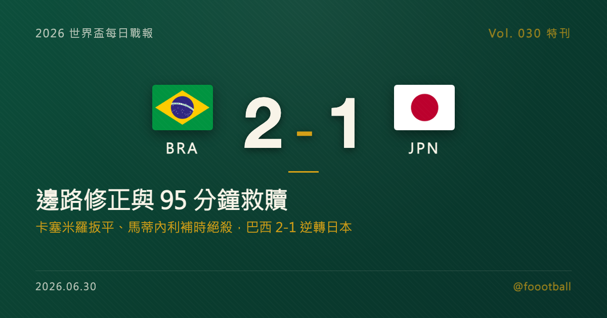

巴西 2-1 日本：安切洛蒂的邊路修正，與 95 分鐘的森巴救贖
2026 世界盃 32 強，巴西在休士頓 2-1 逆轉日本。日本上半場靠佐野海舟第 29 分鐘進球領先，巴西下半場由卡塞米羅扳平，替補登場的馬蒂內利在第 95 分鐘完成絕殺。這篇特刊拆解：日本如何用 3-4-3 封住維尼修斯，安切洛蒂如何用邊路斜傳與高空壓迫改變比賽，以及這場逆轉對巴西接下來淘汰賽的真正警訊。

2026 世界盃特刊｜Vol. 030 番外
有些逆轉，看起來是球星個人能力；拆開來看，其實是教練在中場休息時把問題重新定義了一次。
巴西 2-1 日本，就是這種比賽。
2026 年 6 月 29 日，在休士頓的 NRG Stadium，日本用一個紀律嚴整的上半場，把巴西逼到淘汰賽邊緣。佐野海舟（Kaishu Sano）第 29 分鐘破門，日本 1-0 領先進入中場。那 45 分鐘裡，巴西不是沒有球權，也不是沒有天賦；問題在於他們的攻擊被日本導向了最不舒服的區域：維尼修斯（Vinícius Júnior）被包夾，中路直塞被堵死，禁區裡缺少足夠的第二波衝擊。
下半場，安切洛蒂（Carlo Ancelotti）做了最老派、也最有效的修正：少一點中路短傳，多一點邊路寬度；少一點等待縫隙，多一點把球送進禁區的物理壓迫。第 56 分鐘，卡塞米羅（Casemiro）把比分扳成 1-1。第 95 分鐘，替補前鋒馬蒂內利（Gabriel Martinelli）從左側插上，完成 2-1 絕殺。巴西晉級，但這不是一場讓人完全放心的勝利。
它更像一張淘汰賽診斷報告：巴西有足夠的天賦從危機裡爬出來，但他們也確實被日本證明，這支球隊仍然能被紀律、轉換與局部包夾逼到非常狼狽。
一、日本上半場的答案：不是退守，是有方向地封鎖
森保一的日本不是單純擺低位。真正關鍵在於，他們知道巴西最想從哪裡開始加速。
日本的 3-4-3 在防守時會壓縮成 5-4-1 或 5-2-3 的混合形態，重點不是平均守住每一塊草皮，而是先把巴西最有破壞力的左路降速。維尼修斯拿球時，日本右側會形成兩層保護：第一層先限制他向內切的角度，第二層堵住他與中路隊友的連線。這讓巴西左路看起來有球，實際上卻很難把球帶到真正危險的半空間（half-space）。
這種安排的優勢，是能把強隊的攻擊變成「看起來有控球，卻一直在外圍繞」。巴西上半場多次推到前場，卻很少形成連續的禁區內威脅。日本不需要每次都搶下球；只要讓巴西的每一次進攻都多繞兩腳、多慢半拍，就已經達到目的。
然後，日本等到了自己的轉換機會。
第 29 分鐘，巴西後場一次出球失誤被日本抓住。佐野海舟在中路完成推進後，於禁區弧頂附近起腳破門。這顆球最值得注意的不是射門本身，而是它暴露出的結構問題：當巴西邊後衛與中場都往前壓，日本只要第一腳反擊能穿過巴西的反搶線，巴西後腰與中衛之間就會出現短暫斷層。淘汰賽裡，這種斷層不需要多，一次就夠。
日本 1-0 領先，不是偶然偷到一球，而是上半場戰術設計得到的回報。
二、巴西的困局：天賦很多，但第一套解法太窄
巴西上半場的問題，不是「踢得不夠華麗」，而是進攻路徑太容易被預測。
這支安切洛蒂的巴西，在小組賽三戰進 7 球、只失 1 球，看似已經找到務實與天賦之間的平衡。但淘汰賽和小組賽最大的差別，是對手願意用更極端的方式交換風險。日本可以接受自己長時間沒有球，只要巴西最危險的持球點被困住；日本也可以接受防線退得很深，只要禁區中央始終有人數優勢。
巴西上半場最尷尬的地方，是維尼修斯被重點盯防後，第二方案不夠快。中路想靠短傳滲透，但日本中場與後衛線距離壓得很短；右路想拉開，卻缺少能穩定一對一撕裂防線的連續威脅；禁區內又沒有足夠多的前插點，讓傳中變得像把球交還給對手。
這就是為什麼安切洛蒂下半場的修正，重點不是換上某一個人而已，而是改變整個問題的解法：既然日本要把中路鎖死，那就別在中路跟他們耗；既然日本用矮密度與橫移速度保護禁區前沿，那就把球更早、更直接地送到防線背後與禁區弱側。
三、安切洛蒂的修正：邊路寬度與高空壓迫
下半場的巴西，明顯踢得更直接。
他們不再執著於在中路找到完美縫隙，而是把攻擊重心往邊路拉開，利用對角線斜傳、提前傳中與第二點爭搶，把日本防線逼進更多空中與身體對抗。這套打法不一定漂亮，卻很適合淘汰賽：當對手體能開始下降，禁區內每一次起跳、每一次二點球、每一次解圍後的再壓迫，都會變成累積壓力。
第 56 分鐘，卡塞米羅扳平比分，就是這個邏輯的結果。這顆球讓比賽重新回到巴西手上，也讓日本原本最有價值的狀態被打破：領先時，日本可以把每一次防守都當成倒數；被扳平後，日本必須重新面對一個問題：繼續守，還是重新投入反擊資源？
森保一選擇先穩住防線，這是可以理解的淘汰賽選擇。問題是，這個選擇也讓日本的反擊速度逐漸消失。當翼衛與中前場球員體能下降，日本換人更偏向保護防線，巴西中後場承受的反擊威脅就降低了。結果是，巴西可以把更多人推上去，讓日本防線在最後 30 分鐘長時間承受同一種壓迫。
這就是低位防守的代價。守得越久，防線越完整；但你越守，也越容易失去把球帶出去的能力。一旦反擊點消失，強隊就能把整場比賽壓成半場攻防。
四、95 分鐘的絕殺：馬蒂內利改變的不是名單，是速度
馬蒂內利的進球，表面上是補時絕殺；實質上，是巴西下半場不斷拉扯日本防線後得到的遲來縫隙。
補時階段，布魯諾·吉馬良斯（Bruno Guimarães）把球送入禁區，馬蒂內利從弱側插入，在防守球員封堵前把球送進遠角。這顆球的價值，在於它不是一個停在原地等待傳球的終結，而是一個替補球員用新鮮速度插進疲憊防線身後的終結。
對安切洛蒂來說，這也是一個重要提醒：巴西的替補席不是裝飾，而是淘汰賽裡真正的戰術資源。馬蒂內利、恩德里克（Endrick）這類球員，不一定每場都需要先發；但當比賽進入 60 分鐘後，他們的速度與衝擊力，正好能對準低位防守最容易衰退的環節。
這場比賽如果進入延長賽，巴西未必一定更輕鬆。日本即使被壓著打，仍有足夠的防守紀律把比賽拖進更混亂的 30 分鐘。馬蒂內利在補時把比賽收掉，避免了巴西進入另一種不可控風險。
五、日本輸在哪裡：不是膽小，而是轉換能力被耗乾
對日本而言，這場失利最殘酷的地方，是他們做對了很多事。
他們成功限制維尼修斯上半場的內切空間，成功讓巴西第一套進攻方案變慢，也成功利用轉換攻入第一球。面對五屆世界冠軍，日本不是被場面壓垮，而是在最後階段被體能、禁區高度與替補深度一點一點磨掉。
真正的轉折，是扳平後日本反擊出口變少。低位防守要成立，不能只靠守門員和後衛線；它必須保留至少一到兩個能把球帶過中線的點，否則每次解圍都只是下一波進攻的開始。日本下半場後段的問題，正是奪回球後第一、第二腳很難乾淨地送出去，導致巴西可以立即二次進攻。
這不是森保一單一換人決策的失誤，而是低位防守在淘汰賽裡的典型困境：你越接近守住結果，就越想撤掉風險；但撤掉風險的同時，也常常撤掉了自己把比賽帶離禁區的能力。
六、巴西晉級，但警訊沒有消失
巴西晉級 16 強，接下來將在紐約新澤西的 MetLife Stadium 面對象牙海岸與挪威之間的勝者。紙面上，巴西仍然是奪冠熱門；但這場 2-1 也提醒了三件事。
第一，巴西面對紀律型低位防守時，不能只靠維尼修斯一側解題。對手一定會重點封鎖他，巴西必須更早啟用右路、禁區二點與中場後插上的變化。
第二，後場轉換防守仍是風險。日本的進球來自一次失誤後的快速推進，未來若遇到法國、西班牙、阿根廷這類轉換效率更高的球隊，代價可能不只是一球。
第三，替補席會決定巴西能走多遠。安切洛蒂最有價值的資源，不只是先發 11 人，而是能在不同比賽狀態下，派出不同速度、不同身體條件、不同攻擊路徑的第二套武器。
這場比賽最後留下的畫面，是馬蒂內利滑過日本防線，把球送進遠角。但真正的重點不是那一腳，而是前面 95 分鐘如何把那一腳變得可能。
巴西活下來了。日本也證明了，這支巴西並非不可被困住。從淘汰賽的角度看，這兩個結論同時成立，才是這場 32 強賽最有價值的地方。
常見問題
巴西對日本最後比分是多少？誰進球？
巴西 2-1 逆轉日本。日本由佐野海舟第 29 分鐘先進球；巴西下半場由卡塞米羅扳平，馬蒂內利在第 95 分鐘完成絕殺。
這場巴西逆轉的戰術關鍵是什麼？
關鍵在於下半場改用更直接的邊路寬度、對角線斜傳與禁區壓迫，不再只依賴中路短傳滲透。日本上半場成功封鎖維尼修斯與中路半空間，但下半場體能下降後，被巴西的空中對抗與二次進攻持續壓迫。
日本為什麼上半場能領先，最後卻被逆轉？
日本上半場靠 3-4-3 的局部封鎖與快速攻防轉換取得領先；但下半場守得更深後，反擊出口逐漸消失，巴西能持續全線前壓。低位防守保住了防線密度，卻也犧牲了把球帶出禁區的能力。
巴西下一輪會遇到誰？
依目前淘汰賽籤表，巴西作為 Match 76 勝者，16 強將對上 Match 78 的勝者，也就是象牙海岸與挪威之間的勝隊。
資料來源與 Tags
Tags：世界盃, 2026世界盃, 巴西, 日本, 安切洛蒂, 維尼修斯, 馬蒂內利
資料來源：FIFA 賽事資料、The Guardian、Olympics.com、Al Jazeera 賽事即時報導、Japan Forward、Fox Sports 與本專案 fixtures/knockout.json 賽果資料交叉核對。比分、進球時間與晉級路徑以賽事資料與本專案已更新淘汰賽資料為主；個別控球率、射門與球員評分因來源口徑可能不同，本文以戰術脈絡描述為主，避免把未完全一致的數字寫成定論。